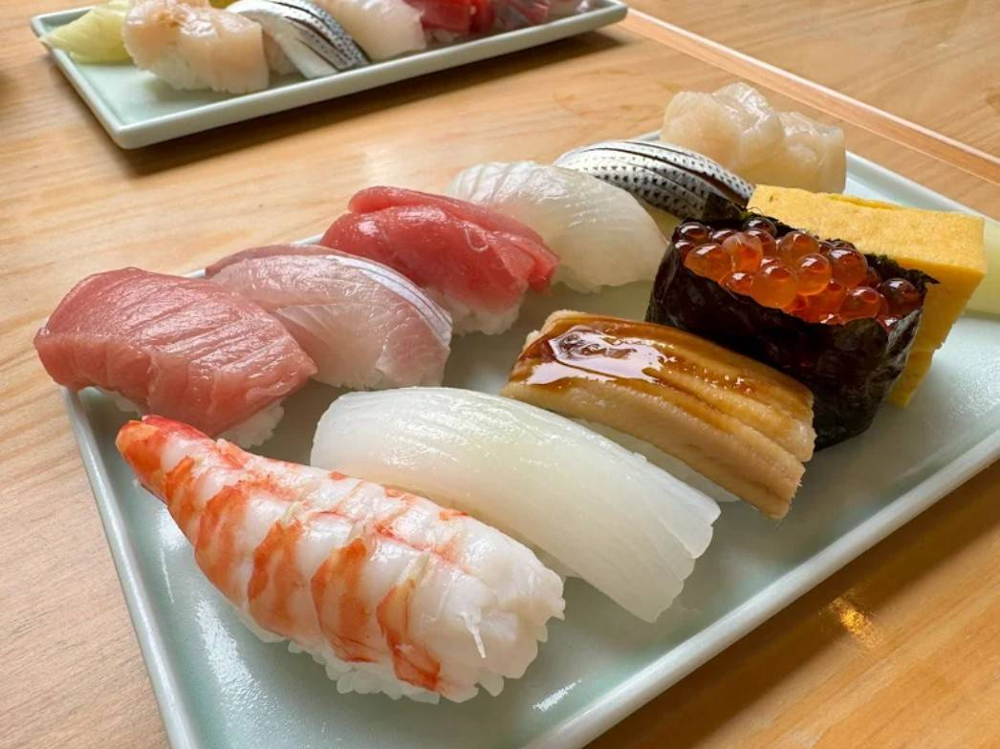
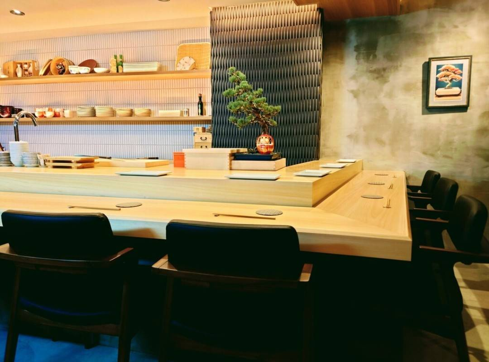
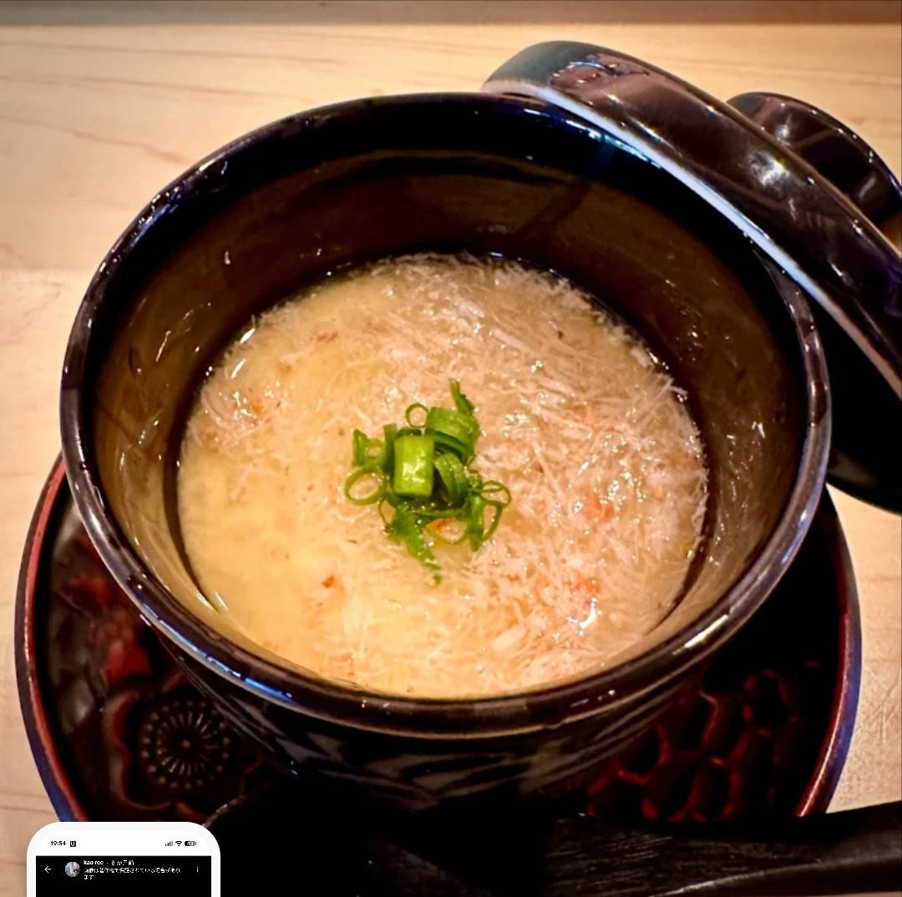

SHOURAKU SAIKAN
手作り餃子と、
本格中華の味。
SCROLL
当店の看板メニューは、自家製の手作り餃子です。
餃子は大粒の肉と、鮮度にこだわったニラ・長ねぎを使用し、ひとつひとつ丁寧に仕込んでいます。
焼き上がった餃子は、肉汁があふれるほどジューシー。
餡にしっかりと旨味があるため、醤油をつけなくても美味しく召し上がれるのが特徴です。
まずはそのまま、途中から酢コショウで味の変化を楽しむのもおすすめです。


当店は、地域の皆さまに長く親しまれてきた本格中華料理店です。広々としたテーブル席で、ゆったりと食事やお酒を楽しめる空間づくりを大切にしています。家族での食事、友人との食事、宴会など、さまざまなシーンでご利用いただけます。
Handmade Gyoza
大粒の肉と鮮度にこだわったニラ・長ねぎを使用。
肉汁あふれるジューシーな味わいが自慢の看板メニューです。
Sweet & Sour Pork with Black Vinegar
黒酢のコクと甘みが絶妙に絡む一品。
丁寧に仕込んだ豚肉の旨味をお楽しみください。
Steamed Chicken with Scallion Sauce
しっとりと蒸し上げた鶏肉に、香り高い葱ソースをたっぷりと。
素材の旨味を活かしたさっぱりとした味わいです。
Knife-cut Noodles & Yakisoba
もちもちの刀削麺や、香ばしい焼きそばなど麺類も充実。
ランチにもディナーにもお楽しみいただけます。
ご予約はお電話にて承っております。
宴会やグループでのご利用もお気軽にご相談ください。
TEL: 044-853-0971
大粒の肉と鮮度にこだわったニラ・長ねぎを使用し、ひとつひとつ丁寧に手作り。肉汁あふれるジューシーさが自慢です。醤油なしでも美味しい餡の旨味をお楽しみください。

新鮮な食材を厳選し、素材の旨味を最大限に活かした味付け。丁寧な仕込みで本格的な中華の味をお届けします。
餃子はもちろん、黒酢酢豚、蒸し鶏の葱ソース、焼きそば、刀削麺など、定番の本格中華料理を豊富にご用意しています。
お一人様の晩酌セットから、ご家族・友人との食事、グループ宴会まで。広々とした席で、さまざまなシーンに対応いたします。



月〜金: 11:00 - 15:00 / 17:00 - 22:00
土・日: 11:00 - 22:00